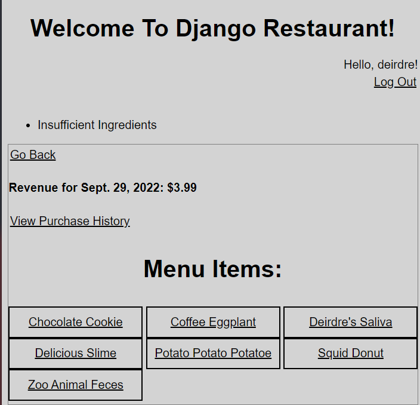
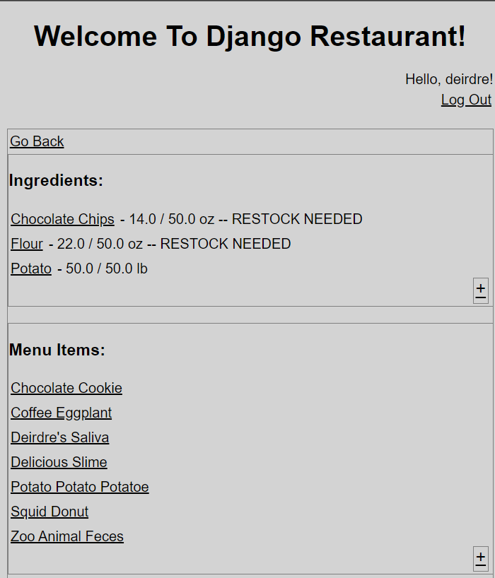
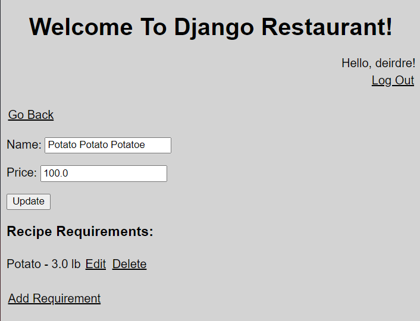

Django Restaurant

Django Restaurant is divided into three main sections: the homepage, POS, and Inventory. The homepage, displayed above, links to the other two sections and provides basic information about the status of the restaurant. Django Restaurant organizes sales and profit by day, and a new day can be set by pressing the "Start New Day?" button.
The POS page displays menu items available for sale. When a purchase is made, the ingredients required to make the item in question are subtracted from the inventory. If there are insufficient ingredients, the sale will not go through.
The Inventory page displays ingredients and menu items tracked by the app. New menu items and ingredients can be added by clicking the plus (+) button to the bottom right of each list.
Selecting a menu item navigates to a sub-menu where recipe requirements can be added or removed.
See Code On Github